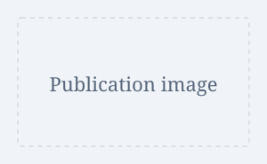

Position title
Institution or lab name (YYYY–Present)
- Describe your research topic and your role.
- Summarize your methods and contributions.
Your position, University name
Degree, Field of study
A short introduction to your academic background and current position.
Describe your research interests, current work, and future directions.
 Venue name
Venue name
Venue namePosition title
Institution or lab name (YYYY–Present)
Position title
Institution or lab name (YYYY–YYYY)
Position title, Course name
University name (Term, YYYY)
Degree in Field of study
University name (YYYY–Present)
Degree in Field of study
University name (YYYY–YYYY)
Degree in Field of study
University name (YYYY–YYYY)